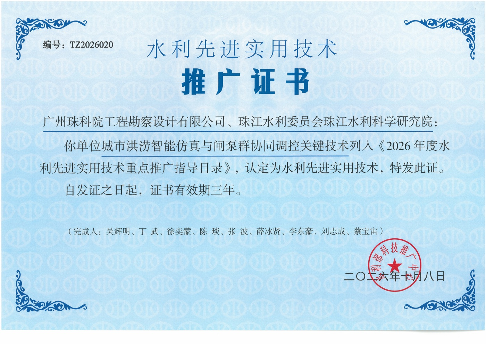
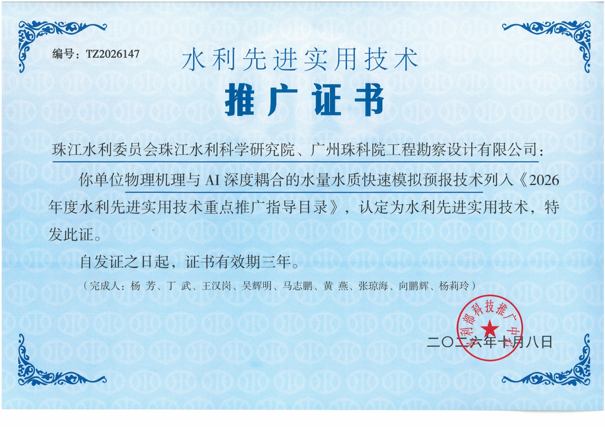
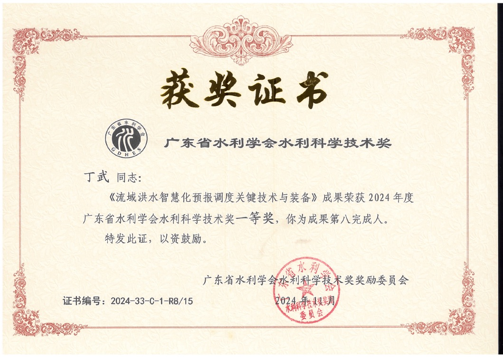

面向城市洪涝风险防控的水工程群协同调度智能优化方法研究
丁武、杨芳、周姗、何用、王卫光、王汉岗 · 水利学报，2026，网络首发（7 月 20 日）
Research & impact
论文、发明专利与技术推广记录
Publications
期刊论文、会议论文与学位论文。
丁武、杨芳、周姗、何用、王卫光、王汉岗 · 水利学报，2026，网络首发（7 月 20 日）
丁武、杨芳、王卫光、王汉岗、何用、蔺崇哲 · 水利学报，2025，56(12)：1647–1658
Fang Yang, Wu Ding, Jianshi Zhao, Lixiang Song, Dawen Yang, Xudong Li · Journal of Hydrology，2024，643：131998
陈晨、丁武、罗景镇、康传雄 · 水力发电，2024，50(2)：94–100
刘晋、陈业超、丁武、张炜、李文 · 人民珠江，2024，45(6)：1–9
丁武、林汉雄、王汉岗、张炜、杨滨 · 人民珠江，2023，44(8)：93–101
丁武、马媛、杜诗蕾、李海辰、丁公博、王超 · 计算机科学，2020，47(11A)：459–463
Wenchao Zhang、丁武 · ICEPAE 2026，85–91
丁武 · 华中科技大学硕士学位论文
Patents
按授权或公开年份排列；A 号条目列示公开记录。点击名称查看详情。
CN121457183B · 第一发明人
CN121436484B · 第一发明人
CN119445808A · 第十二发明人 · 已公开
CN118195424A · 第十八发明人 · 已公开
CN117494616B · 第五发明人
CN116738874B · 第二发明人
CN116881860B · 第二发明人
CN116562537B · 第五发明人
CN115358650B · 第十发明人
CN115952958B · 第一发明人
CN115854999B · 第四发明人
CN115062564B · 第十六发明人
CN113837450B · 第二发明人
CN111307123B · 第十发明人
Technology transfer
入选《2026 年度水利先进实用技术重点推广指导目录》的成果。


Awards
“智水杯”水工程数字孪生荣誉奖
广东省水利学会水利科学技术奖一等奖 · 第八完成人
珠江水利委员会科学技术奖一等奖
